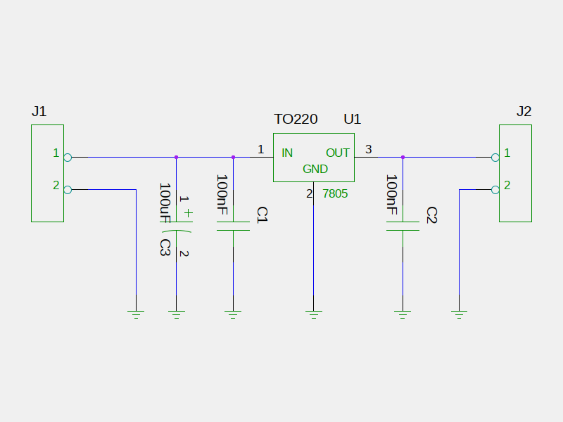

The schematics is usually the single source of all logical information: footprints, refdes and values and connections (networks or nets). A project is just a directory that holds at least the schematics, but usually also the pcb layout file and scripts.
Start the new project by creating an empty directory. Draw the schematics with any schematics editor supported by pcb-rnd and save it in this new directory. On the schematics place the following symbols and edit/add these attributes:
Arrange and connect the pins as shown below.

Depending on the schematics capture software you choose, you may need to export a netlist that can be imported in pcb-rnd.
TODO: create a pool node on this
Please follow the tEDAx netlist tutorial from step2 for laying out the board.
If you need to change the schematics later, re-export it from the schematics editor and re-import it from pcb-rnd. If the format included importing footprints, all new footprints will be imported. The netlist will be updated. press {c r} after the import and update the board to reflect schematics changes.